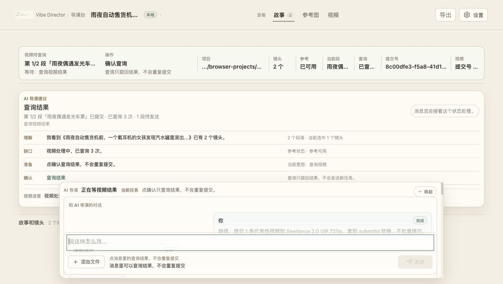
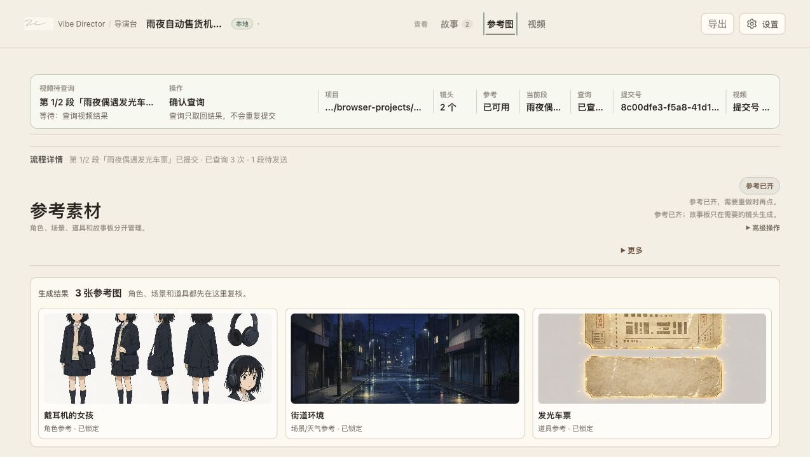
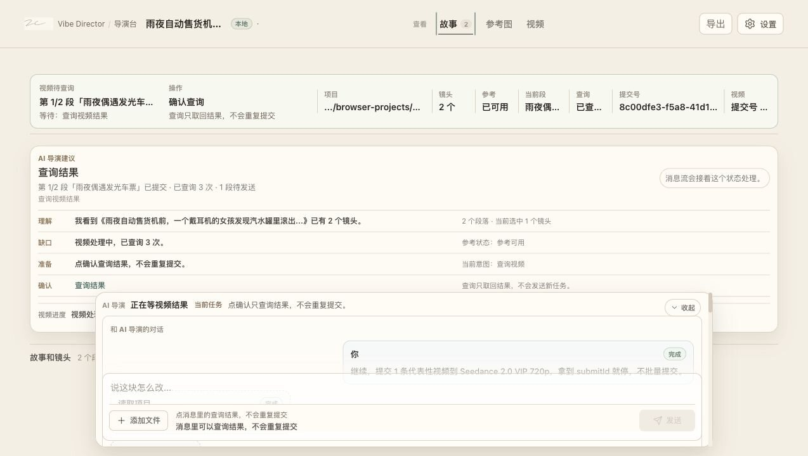
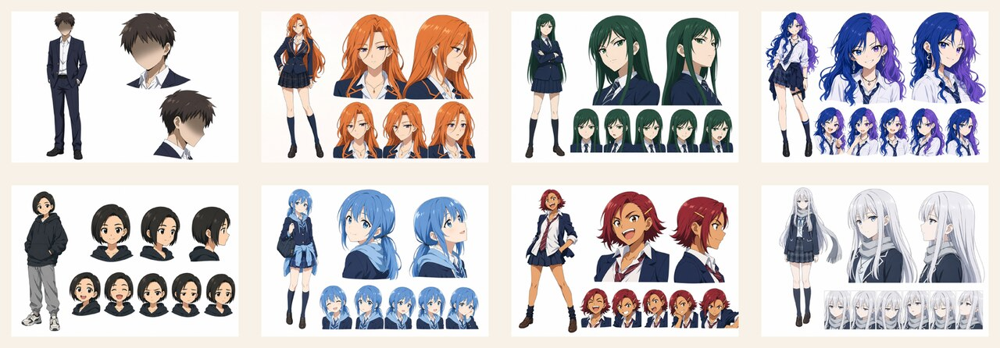
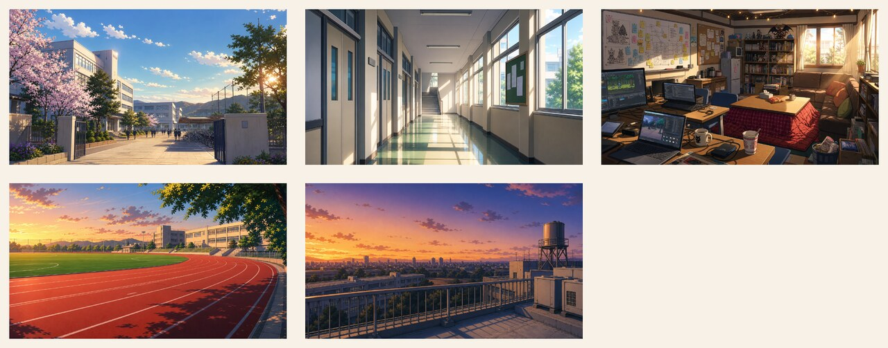
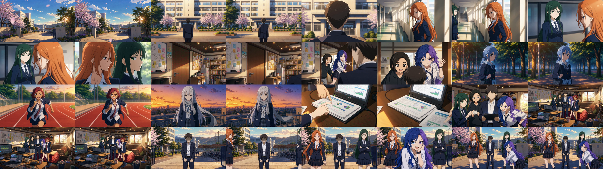

统一输入与 Agent 消息区
脚本、修改意见、图片、声音从同一个入口进入。用户不需要先判断素材属于什么工程字段。

为什么要做
AIGC 已经能让普通人生成精美画面，但和有影视背景的人相比，差距常常出现在更隐性的地方：镜头如何切、情绪如何推进、观众应该先看见什么。
软件参与方式
截图来自 Vibe Director 本地工作台。它展示的不是静态模板，而是 Agent 正在读取项目、管理参考、处理视频队列和整理交付。
脚本、修改意见、图片、声音从同一个入口进入。用户不需要先判断素材属于什么工程字段。

角色、场景、道具不是一次性附件，而是能被锁定和复用的项目资产。

每个镜头都有自己的生成模式、素材状态和视频进度，适合管理多段短片项目。

项目素材
这个项目使用一组既有角色设定和场景参考，由 Agent 整理成后续镜头可复用的参考资产。


生成结果
每段镜头独立提交给 Seedance，最终拼成 32 秒无音轨版本，方便后期再加入 BGM、旁白或字幕。

建立舞台和群像 OP 的第一印象。
用双人关系建立角色冲突感。
节奏加速，转入更活泼的 OP 段落。
快速介绍更多角色，形成群像密度。
把角色关系落到一个可记住的空间里。
用更明确的角色钩子收束 OP 片段。
生成证据